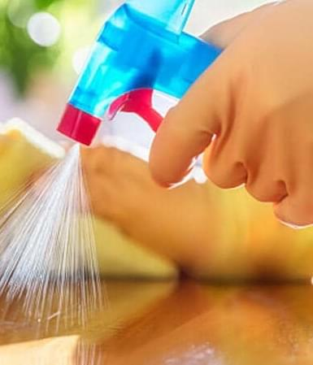

<div class="faq">
<div class="faq__info info-faq">
    
   
        <h1 class="info-faq__title">FAQ</h1>
        <div class="info-faq__content content-info">
            
        <div class="content-info__questions questions-info">
          
            <div class="questions-info__cont cont">
                <div class="y accordion"> <div class="cont__question">Клінінгова компанія (клінінг) що це?</div><div class="plus-icon"></div></div>
                <div class="cont__answer panel" id="message">Дослівний переклад слова "clean" - прибирання, чистка. Клінінгова компанія надає послуги з 
                    прибирання різних типів приміщень, від приватних квартир і будинків до супермаркетів і виробничих приміщень.</div>
             </div>
            
             <div class="questions-info__cont cont">
                <div class="y accordion"> <div class="cont__question ">Що якщо мене не влаштує якість прибирання?</div><div class="plus-icon"></div></div>
                <div class="cont__answer panel">Наші співробітники завжди прикладають максимум зусиль, щоб Ви залишилися задоволені прибиранням. Але якщо, (що буває вкрай рідко) 
                    виявляться недоліки в роботі, Ви не пізніше 24 годин після прибирання повідомте про це менеджеру і клінери обов'язково усунуть недоліки.</div>
             </div>
                
             <div class="questions-info__cont cont">
                <div class="y accordion" ><div class="cont__question question">Як заздалегідь потрібно замовляти прибирання?</div><div class="plus-icon"></div></div>
                <div class="cont__answer panel">Клінінгові послуги потрібно замовляти за 1-2 дні до запланованої дати прибирання.</div>
             </div>
             <div class="questions-info__cont cont">
                <div class="y accordion" ><div class="cont__question question">Чи можна замовити прибирання у вихідний або святковий день?</div><div class="plus-icon"></div></div>
                <div class="cont__answer panel">Так, ми працюємо без вихідних. Можна зателефонувати що б отримати консультацію або замовити прибирання 
                    в будь-який день тижня.</div>
             </div>
                
             <div class="questions-info__cont cont">
              <div class="y accordion"><div class="cont__question question">Чи потрібно мені знаходиться в квартирі під час прибирання?</div><div class="plus-icon"></div></div> 
                <div class="cont__answer panel">Необхідно Ваша присутність вранці, на початку прибирання, що б ще раз уточнити всі Ваші побажання. 
                    Після Ви можете займатися своїми справами. За годину до завершення процесу прибирання ми передзвонимо, 
                    щоб Ви приїхали та прийняли роботу.</div>
             </div>
                
            
        </div>
        
        <div class="content-info__img"><picture><source srcset="img/faqimg.webp" type="image/webp"></picture></div>
    </div>
      
   
</div>  
</div>